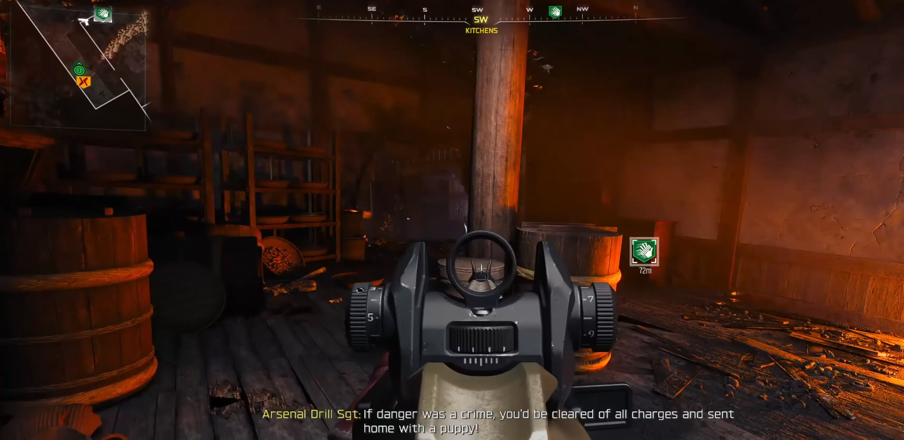
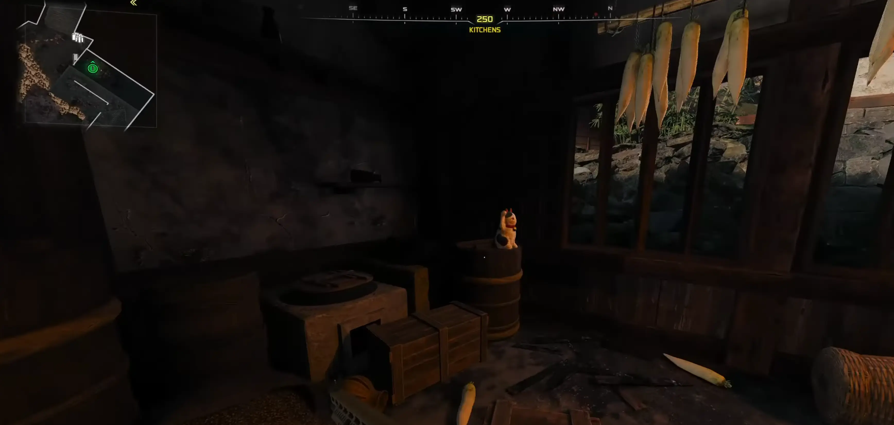
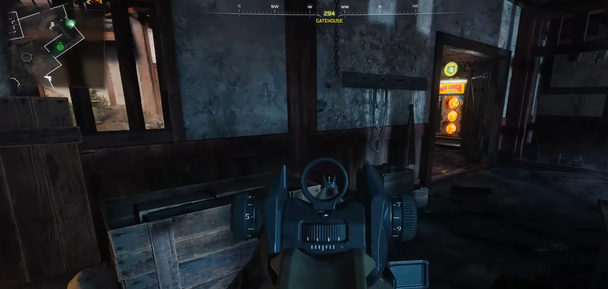
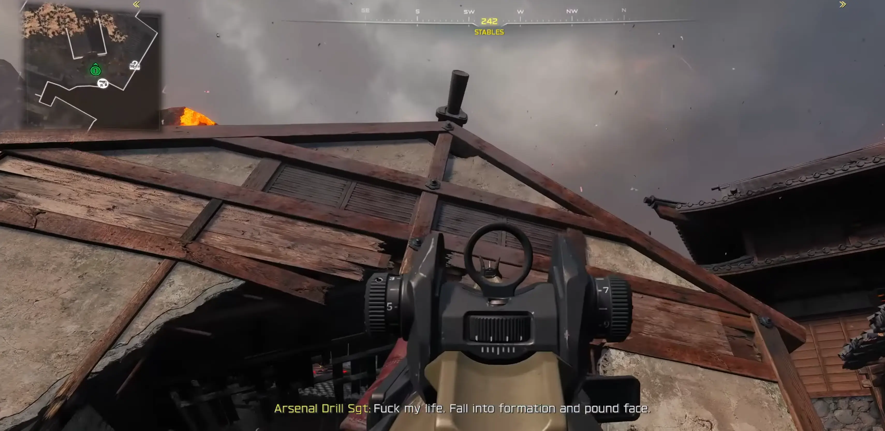
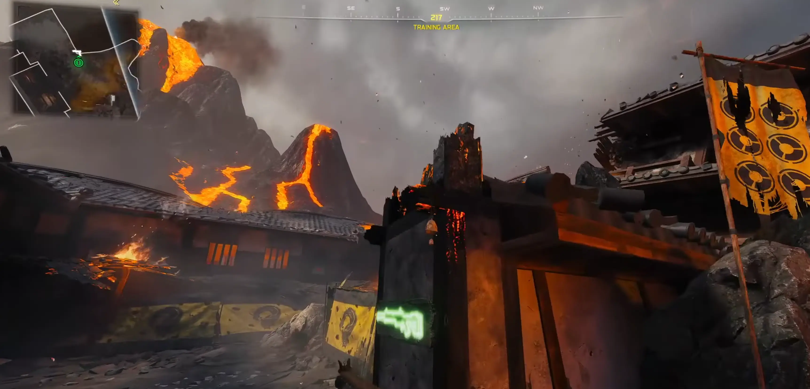
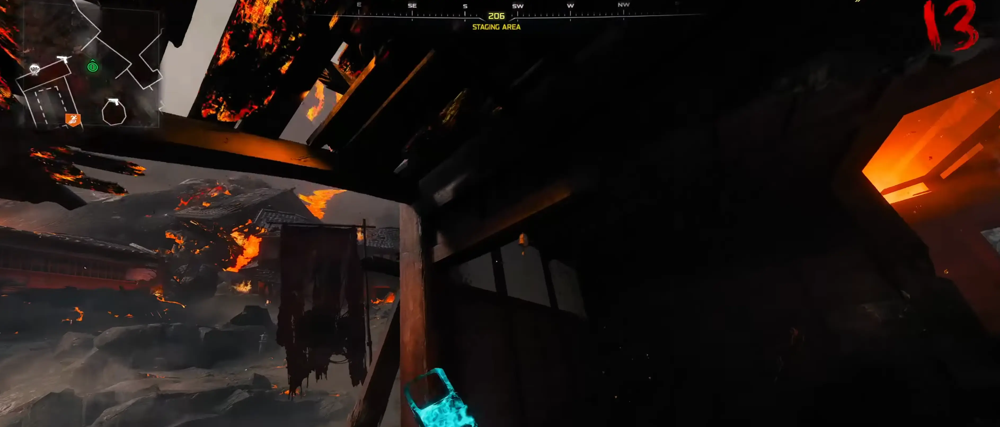
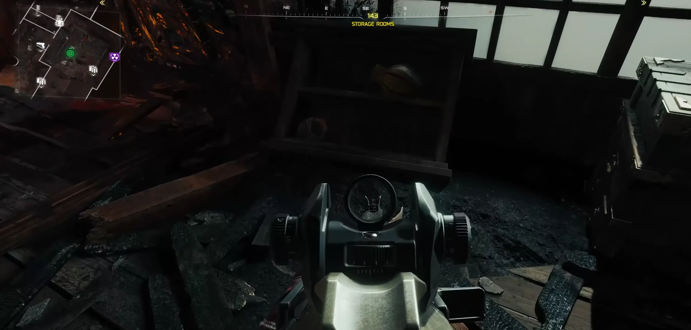
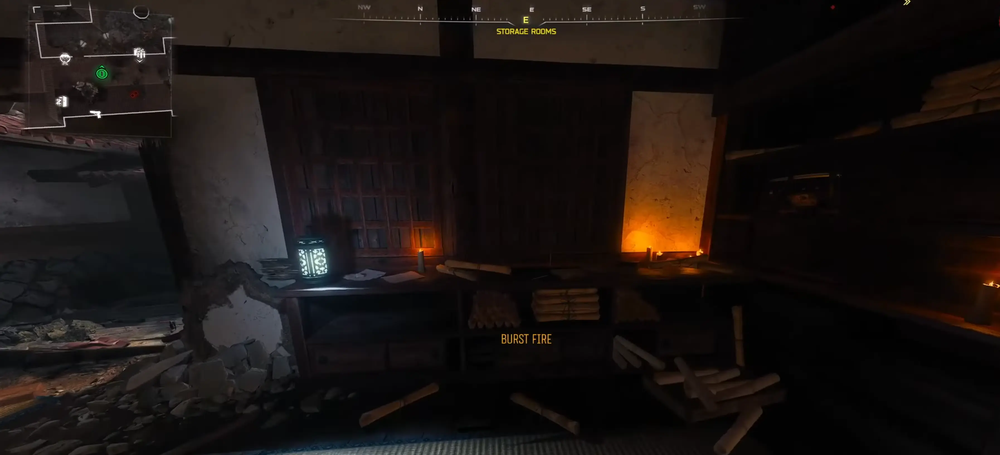
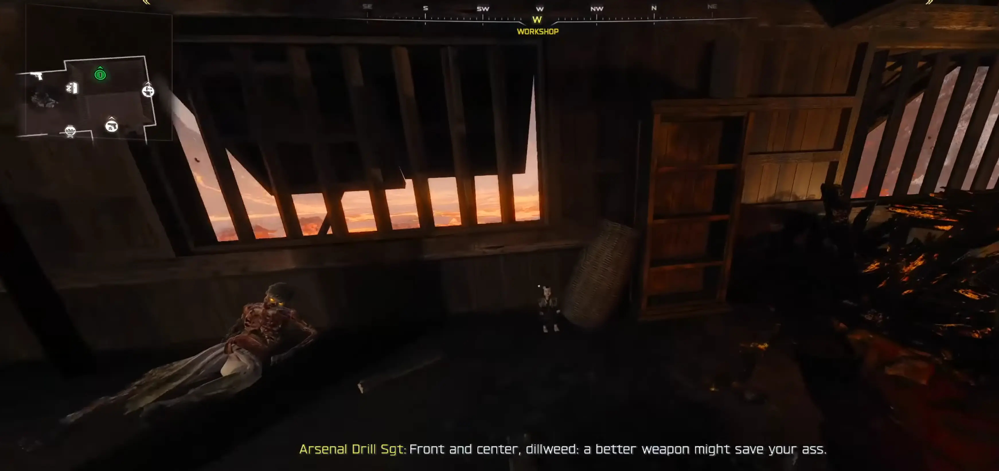

← Powrót do poprzedniej strony
KROK 1: Znajdź figurkę Maneki Neko
To sama podstawa naszego granatu. Szukaj jej w tych miejscach:
Kitchens (Kuchnie): Zaraz za automatem Double Tap, figurka może stać na szczycie beczki.
Kitchens (Kuchnie): Wewnątrz budynku kuchennego, na innej beczce ukrytej za skrzynią.
Gate House (Stróżówka): Wewnątrz budynku, w pobliżu beczek i skrzyń.



KROK 2: Znajdź Furine (Dzwonek wietrzny)
Kolejny element to tradycyjny dzwonek. Sprawdź te lokalizacje:
Stables (Stajnie): Na zewnątrz zniszczonego, zawalonego domu – szukaj go tam, gdzie ściany obracają się w ruinę.
Training Area (Obszar treningowy): Przejdź przez Tea Garden (Ogród herbaciany) obok Blossom Tree (Kwitnące drzewo wiśni), dzwonek może leżeć na samej krawędzi tego obszaru.
Staging Area (Strefa przygotowań): Spójrz w górę, dzwonek może wisieć wysoko w tej sekcji.



KROK 3: Znajdź Karakuri (Mechanizm)
Ostatnia część to mechanizm, który sprawi, że kot zacznie machać łapką:
Storage Rooms (Magazyny): Na górnym piętrze pomieszczeń magazynowych.
Storage Rooms (Magazyny): Na dole, na jednym z blatów/stołów.
Workshop (Warsztat): Zejdź po schodach na dół, mechanizm może leżeć przy beczce.



KROK 4: Złożenie i odbiór nagrody
Gdy masz już wszystkie trzy części, udaj się do Workshop (Warsztat). Znajdziesz tam Stół rzemieślniczy. Wejdź z nim w interakcję, a pojawi się Maneki Neko. Podnieś go i ciesz się swoim nowym granatem!